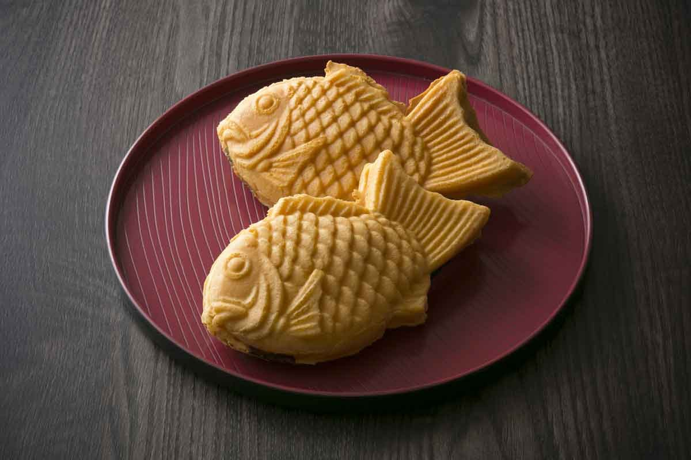

Рецепт Тайяки

Ингредиенты:
- 200 г муки для выпечки
- 1 ч. ложка разрыхлителя
- 2 ст. ложки сахара
- 1/2 ч. ложки соли
- 1 яйцо
- 250 мл молока
- Ванильный экстракт (по желанию)
- Начинка по вашему выбору (красная бобовая паста (анко), шоколад, бананы и т.д.)
Приготовление:
- Подготовка теста:
- В отдельной миске смешайте муку, разрыхлитель, сахар и соль.
- В другой миске взбейте яйцо, молоко и ванильный экстракт.
- Добавьте жидкие ингредиенты к сухим и перемешайте до получения однородной массы.
- Приготовление тайяки:
- Разогрейте специальную сковороду для тайяки (или сковороду с формами в виде рыб).
- Смажьте форму небольшим количеством масла.
- Налейте немного теста в форму, затем добавьте начинку и сверху накройте еще немного теста.
- Закройте форму и готовьте 3-4 минуты с каждой стороны, пока тайяки не станут золотистыми.